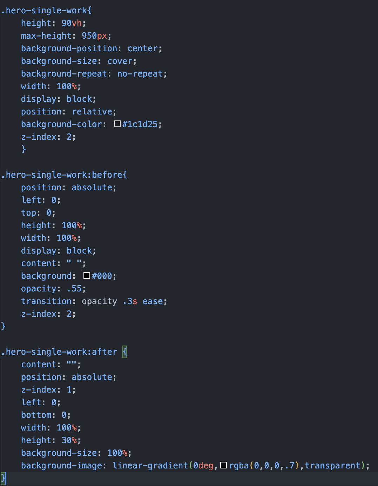
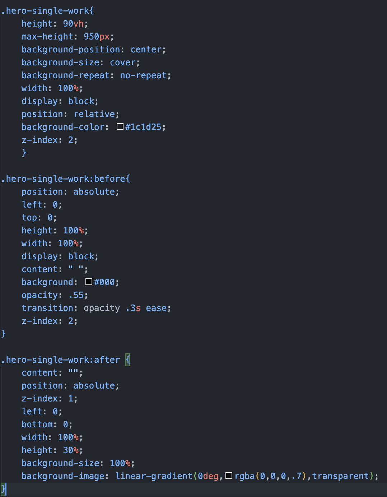
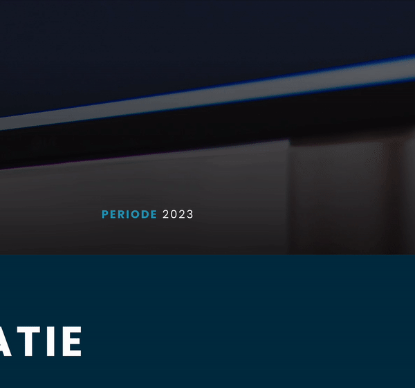
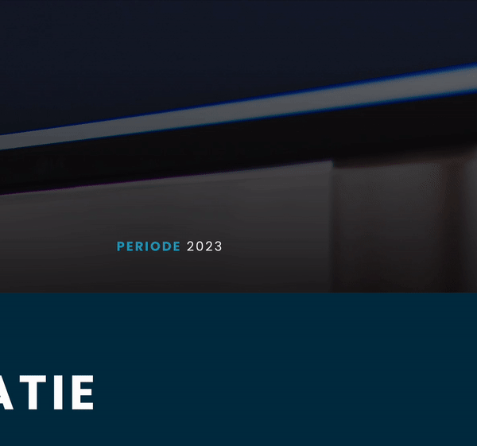

Bij het maken van mijn portfolio heb ik veel gebruik gemaakt van een werk-portfolio als voorbeeld (deze is terug te vinden onderaan de pagina & op mijn portfolio pagina) hierbij werd gebruik gemaakt van een image op de homepagina.
Omdat ik dit zelf ook wilde op mijn portfolio pagina, had ik een image toegevoegd als background image / hero-banner, het probleem was alleen dat ik daardoor een lage kwaliteit image kreeg doordat hij gecropt werd.
Met behulp van element inspecteren ben ik gaan uitzoeken op mijn inspiratie pagina hoe die persoon het had aangepakt, hier kwam ik de eigenschap tegen: background-image. Maar dan in HTML, dus keek ik verder naar de CSS.
Hier ontdekte ik dat deze persoon gebruik maakte van background-position, size & repeat. Dit zorgde ervoor dat mijn images correct zonder (veel) kwaliteit te schalen naar de juiste grootte.
Verder ontdekte ik hier bij het element inspecteren de eigenschap VH ik wist niet wat dit betekende en ik zocht op wat het inhield. Toen kwam ik erachter dat het viewport height betekent. Dit betekent dus dat de class/image etc. altijd zal schalen naar de
browsergrootte van de desbetreffende user waarbij 100vh gelijk staat aan 100% van de user zijn browsergrootte.
Ten slotte ontdekte ik pseudo klassen/elementen, waarbij je inhoud kunt toevoegen voor of na een bepaald element met alleen CSS. In mijn voorbeeld hiernaast bijvoorbeeld een opacity
filter onder aan de image voor de hero-banner.


 



 
